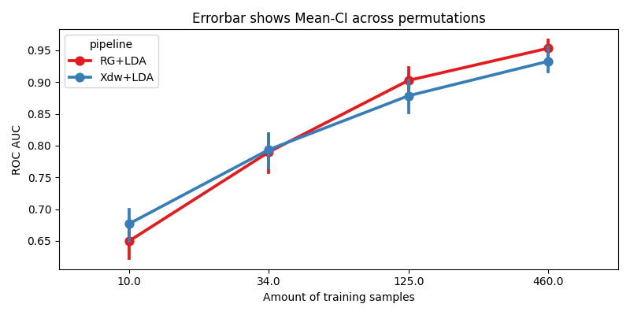

Note
Go to the end to download the full example code.
Within Session P300 with Learning Curve#
This example shows how to perform a within session analysis while also creating learning curves for a P300 dataset.
We will compare two pipelines :
Riemannian geometry with Linear Discriminant Analysis
XDAWN and Linear Discriminant Analysis
We will use the P300 paradigm, which uses the AUC as metric.
# Authors: Jan Sosulski
#
# License: BSD (3-clause)
import warnings
import matplotlib.pyplot as plt
import numpy as np
import seaborn as sns
from mne.decoding import Vectorizer
from pyriemann.estimation import XdawnCovariances
from pyriemann.spatialfilters import Xdawn
from pyriemann.tangentspace import TangentSpace
from sklearn.discriminant_analysis import LinearDiscriminantAnalysis as LDA
from sklearn.pipeline import make_pipeline
import moabb
from moabb.datasets import BNCI2014_009
from moabb.evaluations import WithinSessionEvaluation
from moabb.evaluations.splitters import LearningCurveSplitter
from moabb.paradigms import P300
# getting rid of the warnings about the future (on s'en fout !)
warnings.simplefilter(action="ignore", category=FutureWarning)
warnings.simplefilter(action="ignore", category=RuntimeWarning)
moabb.set_log_level("info")
Create Pipelines#
Pipelines must be a dict of sklearn pipeline transformer.
processing_sampling_rate = 128
pipelines = {}
We have to do this because the classes are called ‘Target’ and ‘NonTarget’ but the evaluation function uses a LabelEncoder, transforming them to 0 and 1
labels_dict = {"Target": 1, "NonTarget": 0}
# Riemannian geometry based classification
pipelines["RG+LDA"] = make_pipeline(
XdawnCovariances(nfilter=5, estimator="lwf", xdawn_estimator="scm"),
TangentSpace(),
LDA(solver="lsqr", shrinkage="auto"),
)
pipelines["Xdw+LDA"] = make_pipeline(
Xdawn(nfilter=2, estimator="scm"), Vectorizer(), LDA(solver="lsqr", shrinkage="auto")
)
Evaluation#
We define the paradigm (P300) and use all three datasets available for it. The evaluation will return a DataFrame containing AUCs for each permutation and dataset size.
paradigm = P300(resample=processing_sampling_rate)
dataset = BNCI2014_009()
# Remove the slicing of the subject list to evaluate multiple subjects
dataset.subject_list = dataset.subject_list[1:2]
datasets = [dataset]
overwrite = True # set to True if we want to overwrite cached results
data_size = {"policy": "ratio", "value": np.geomspace(0.02, 1, 4)}
# When the training data is sparse, perform more permutations than when we have a lot of data
n_perms = np.floor(np.geomspace(20, 2, len(data_size["value"]))).astype(int)
# Guarantee reproducibility
np.random.seed(7536298)
evaluation = WithinSessionEvaluation(
paradigm=paradigm,
datasets=datasets,
cv_class=LearningCurveSplitter,
cv_kwargs={"data_size": data_size, "n_perms": n_perms},
suffix="examples_lr",
overwrite=overwrite,
)
results = evaluation.process(pipelines)
/home/runner/work/moabb/moabb/.venv/lib/python3.10/site-packages/sklearn/covariance/_shrunk_covariance.py:349: UserWarning: Only one sample available. You may want to reshape your data array
warnings.warn(
/home/runner/work/moabb/moabb/.venv/lib/python3.10/site-packages/sklearn/covariance/_empirical_covariance.py:102: UserWarning: Only one sample available. You may want to reshape your data array
warnings.warn(
/home/runner/work/moabb/moabb/.venv/lib/python3.10/site-packages/sklearn/covariance/_shrunk_covariance.py:349: UserWarning: Only one sample available. You may want to reshape your data array
warnings.warn(
/home/runner/work/moabb/moabb/.venv/lib/python3.10/site-packages/sklearn/covariance/_empirical_covariance.py:102: UserWarning: Only one sample available. You may want to reshape your data array
warnings.warn(
/home/runner/work/moabb/moabb/.venv/lib/python3.10/site-packages/sklearn/covariance/_shrunk_covariance.py:349: UserWarning: Only one sample available. You may want to reshape your data array
warnings.warn(
/home/runner/work/moabb/moabb/.venv/lib/python3.10/site-packages/sklearn/covariance/_empirical_covariance.py:102: UserWarning: Only one sample available. You may want to reshape your data array
warnings.warn(
/home/runner/work/moabb/moabb/.venv/lib/python3.10/site-packages/sklearn/covariance/_shrunk_covariance.py:349: UserWarning: Only one sample available. You may want to reshape your data array
warnings.warn(
/home/runner/work/moabb/moabb/.venv/lib/python3.10/site-packages/sklearn/covariance/_empirical_covariance.py:102: UserWarning: Only one sample available. You may want to reshape your data array
warnings.warn(
/home/runner/work/moabb/moabb/.venv/lib/python3.10/site-packages/sklearn/covariance/_shrunk_covariance.py:349: UserWarning: Only one sample available. You may want to reshape your data array
warnings.warn(
/home/runner/work/moabb/moabb/.venv/lib/python3.10/site-packages/sklearn/covariance/_empirical_covariance.py:102: UserWarning: Only one sample available. You may want to reshape your data array
warnings.warn(
/home/runner/work/moabb/moabb/.venv/lib/python3.10/site-packages/sklearn/covariance/_shrunk_covariance.py:349: UserWarning: Only one sample available. You may want to reshape your data array
warnings.warn(
/home/runner/work/moabb/moabb/.venv/lib/python3.10/site-packages/sklearn/covariance/_empirical_covariance.py:102: UserWarning: Only one sample available. You may want to reshape your data array
warnings.warn(
/home/runner/work/moabb/moabb/.venv/lib/python3.10/site-packages/sklearn/covariance/_shrunk_covariance.py:349: UserWarning: Only one sample available. You may want to reshape your data array
warnings.warn(
/home/runner/work/moabb/moabb/.venv/lib/python3.10/site-packages/sklearn/covariance/_empirical_covariance.py:102: UserWarning: Only one sample available. You may want to reshape your data array
warnings.warn(
/home/runner/work/moabb/moabb/.venv/lib/python3.10/site-packages/sklearn/covariance/_shrunk_covariance.py:349: UserWarning: Only one sample available. You may want to reshape your data array
warnings.warn(
/home/runner/work/moabb/moabb/.venv/lib/python3.10/site-packages/sklearn/covariance/_empirical_covariance.py:102: UserWarning: Only one sample available. You may want to reshape your data array
warnings.warn(
/home/runner/work/moabb/moabb/.venv/lib/python3.10/site-packages/sklearn/covariance/_shrunk_covariance.py:349: UserWarning: Only one sample available. You may want to reshape your data array
warnings.warn(
/home/runner/work/moabb/moabb/.venv/lib/python3.10/site-packages/sklearn/covariance/_empirical_covariance.py:102: UserWarning: Only one sample available. You may want to reshape your data array
warnings.warn(
/home/runner/work/moabb/moabb/.venv/lib/python3.10/site-packages/sklearn/covariance/_shrunk_covariance.py:349: UserWarning: Only one sample available. You may want to reshape your data array
warnings.warn(
/home/runner/work/moabb/moabb/.venv/lib/python3.10/site-packages/sklearn/covariance/_empirical_covariance.py:102: UserWarning: Only one sample available. You may want to reshape your data array
warnings.warn(
/home/runner/work/moabb/moabb/.venv/lib/python3.10/site-packages/sklearn/covariance/_shrunk_covariance.py:349: UserWarning: Only one sample available. You may want to reshape your data array
warnings.warn(
/home/runner/work/moabb/moabb/.venv/lib/python3.10/site-packages/sklearn/covariance/_empirical_covariance.py:102: UserWarning: Only one sample available. You may want to reshape your data array
warnings.warn(
/home/runner/work/moabb/moabb/.venv/lib/python3.10/site-packages/sklearn/covariance/_shrunk_covariance.py:349: UserWarning: Only one sample available. You may want to reshape your data array
warnings.warn(
/home/runner/work/moabb/moabb/.venv/lib/python3.10/site-packages/sklearn/covariance/_empirical_covariance.py:102: UserWarning: Only one sample available. You may want to reshape your data array
warnings.warn(
/home/runner/work/moabb/moabb/.venv/lib/python3.10/site-packages/sklearn/covariance/_shrunk_covariance.py:349: UserWarning: Only one sample available. You may want to reshape your data array
warnings.warn(
/home/runner/work/moabb/moabb/.venv/lib/python3.10/site-packages/sklearn/covariance/_empirical_covariance.py:102: UserWarning: Only one sample available. You may want to reshape your data array
warnings.warn(
/home/runner/work/moabb/moabb/.venv/lib/python3.10/site-packages/sklearn/covariance/_shrunk_covariance.py:349: UserWarning: Only one sample available. You may want to reshape your data array
warnings.warn(
/home/runner/work/moabb/moabb/.venv/lib/python3.10/site-packages/sklearn/covariance/_empirical_covariance.py:102: UserWarning: Only one sample available. You may want to reshape your data array
warnings.warn(
/home/runner/work/moabb/moabb/.venv/lib/python3.10/site-packages/sklearn/covariance/_shrunk_covariance.py:349: UserWarning: Only one sample available. You may want to reshape your data array
warnings.warn(
/home/runner/work/moabb/moabb/.venv/lib/python3.10/site-packages/sklearn/covariance/_empirical_covariance.py:102: UserWarning: Only one sample available. You may want to reshape your data array
warnings.warn(
/home/runner/work/moabb/moabb/.venv/lib/python3.10/site-packages/sklearn/covariance/_shrunk_covariance.py:349: UserWarning: Only one sample available. You may want to reshape your data array
warnings.warn(
/home/runner/work/moabb/moabb/.venv/lib/python3.10/site-packages/sklearn/covariance/_empirical_covariance.py:102: UserWarning: Only one sample available. You may want to reshape your data array
warnings.warn(
/home/runner/work/moabb/moabb/.venv/lib/python3.10/site-packages/sklearn/covariance/_shrunk_covariance.py:349: UserWarning: Only one sample available. You may want to reshape your data array
warnings.warn(
/home/runner/work/moabb/moabb/.venv/lib/python3.10/site-packages/sklearn/covariance/_empirical_covariance.py:102: UserWarning: Only one sample available. You may want to reshape your data array
warnings.warn(
/home/runner/work/moabb/moabb/.venv/lib/python3.10/site-packages/sklearn/covariance/_shrunk_covariance.py:349: UserWarning: Only one sample available. You may want to reshape your data array
warnings.warn(
/home/runner/work/moabb/moabb/.venv/lib/python3.10/site-packages/sklearn/covariance/_empirical_covariance.py:102: UserWarning: Only one sample available. You may want to reshape your data array
warnings.warn(
/home/runner/work/moabb/moabb/.venv/lib/python3.10/site-packages/sklearn/covariance/_shrunk_covariance.py:349: UserWarning: Only one sample available. You may want to reshape your data array
warnings.warn(
/home/runner/work/moabb/moabb/.venv/lib/python3.10/site-packages/sklearn/covariance/_empirical_covariance.py:102: UserWarning: Only one sample available. You may want to reshape your data array
warnings.warn(
/home/runner/work/moabb/moabb/.venv/lib/python3.10/site-packages/sklearn/covariance/_shrunk_covariance.py:349: UserWarning: Only one sample available. You may want to reshape your data array
warnings.warn(
/home/runner/work/moabb/moabb/.venv/lib/python3.10/site-packages/sklearn/covariance/_empirical_covariance.py:102: UserWarning: Only one sample available. You may want to reshape your data array
warnings.warn(
/home/runner/work/moabb/moabb/.venv/lib/python3.10/site-packages/sklearn/covariance/_shrunk_covariance.py:349: UserWarning: Only one sample available. You may want to reshape your data array
warnings.warn(
/home/runner/work/moabb/moabb/.venv/lib/python3.10/site-packages/sklearn/covariance/_empirical_covariance.py:102: UserWarning: Only one sample available. You may want to reshape your data array
warnings.warn(
/home/runner/work/moabb/moabb/.venv/lib/python3.10/site-packages/sklearn/covariance/_shrunk_covariance.py:349: UserWarning: Only one sample available. You may want to reshape your data array
warnings.warn(
/home/runner/work/moabb/moabb/.venv/lib/python3.10/site-packages/sklearn/covariance/_empirical_covariance.py:102: UserWarning: Only one sample available. You may want to reshape your data array
warnings.warn(
/home/runner/work/moabb/moabb/.venv/lib/python3.10/site-packages/sklearn/covariance/_shrunk_covariance.py:349: UserWarning: Only one sample available. You may want to reshape your data array
warnings.warn(
/home/runner/work/moabb/moabb/.venv/lib/python3.10/site-packages/sklearn/covariance/_empirical_covariance.py:102: UserWarning: Only one sample available. You may want to reshape your data array
warnings.warn(
/home/runner/work/moabb/moabb/.venv/lib/python3.10/site-packages/sklearn/covariance/_shrunk_covariance.py:349: UserWarning: Only one sample available. You may want to reshape your data array
warnings.warn(
/home/runner/work/moabb/moabb/.venv/lib/python3.10/site-packages/sklearn/covariance/_empirical_covariance.py:102: UserWarning: Only one sample available. You may want to reshape your data array
warnings.warn(
/home/runner/work/moabb/moabb/.venv/lib/python3.10/site-packages/sklearn/covariance/_shrunk_covariance.py:349: UserWarning: Only one sample available. You may want to reshape your data array
warnings.warn(
/home/runner/work/moabb/moabb/.venv/lib/python3.10/site-packages/sklearn/covariance/_empirical_covariance.py:102: UserWarning: Only one sample available. You may want to reshape your data array
warnings.warn(
/home/runner/work/moabb/moabb/.venv/lib/python3.10/site-packages/sklearn/covariance/_shrunk_covariance.py:349: UserWarning: Only one sample available. You may want to reshape your data array
warnings.warn(
/home/runner/work/moabb/moabb/.venv/lib/python3.10/site-packages/sklearn/covariance/_empirical_covariance.py:102: UserWarning: Only one sample available. You may want to reshape your data array
warnings.warn(
/home/runner/work/moabb/moabb/.venv/lib/python3.10/site-packages/sklearn/covariance/_shrunk_covariance.py:349: UserWarning: Only one sample available. You may want to reshape your data array
warnings.warn(
/home/runner/work/moabb/moabb/.venv/lib/python3.10/site-packages/sklearn/covariance/_empirical_covariance.py:102: UserWarning: Only one sample available. You may want to reshape your data array
warnings.warn(
/home/runner/work/moabb/moabb/.venv/lib/python3.10/site-packages/sklearn/covariance/_shrunk_covariance.py:349: UserWarning: Only one sample available. You may want to reshape your data array
warnings.warn(
/home/runner/work/moabb/moabb/.venv/lib/python3.10/site-packages/sklearn/covariance/_empirical_covariance.py:102: UserWarning: Only one sample available. You may want to reshape your data array
warnings.warn(
/home/runner/work/moabb/moabb/.venv/lib/python3.10/site-packages/sklearn/covariance/_shrunk_covariance.py:349: UserWarning: Only one sample available. You may want to reshape your data array
warnings.warn(
/home/runner/work/moabb/moabb/.venv/lib/python3.10/site-packages/sklearn/covariance/_empirical_covariance.py:102: UserWarning: Only one sample available. You may want to reshape your data array
warnings.warn(
/home/runner/work/moabb/moabb/.venv/lib/python3.10/site-packages/sklearn/covariance/_shrunk_covariance.py:349: UserWarning: Only one sample available. You may want to reshape your data array
warnings.warn(
/home/runner/work/moabb/moabb/.venv/lib/python3.10/site-packages/sklearn/covariance/_empirical_covariance.py:102: UserWarning: Only one sample available. You may want to reshape your data array
warnings.warn(
/home/runner/work/moabb/moabb/.venv/lib/python3.10/site-packages/sklearn/covariance/_shrunk_covariance.py:349: UserWarning: Only one sample available. You may want to reshape your data array
warnings.warn(
/home/runner/work/moabb/moabb/.venv/lib/python3.10/site-packages/sklearn/covariance/_empirical_covariance.py:102: UserWarning: Only one sample available. You may want to reshape your data array
warnings.warn(
/home/runner/work/moabb/moabb/.venv/lib/python3.10/site-packages/sklearn/covariance/_shrunk_covariance.py:349: UserWarning: Only one sample available. You may want to reshape your data array
warnings.warn(
/home/runner/work/moabb/moabb/.venv/lib/python3.10/site-packages/sklearn/covariance/_empirical_covariance.py:102: UserWarning: Only one sample available. You may want to reshape your data array
warnings.warn(
/home/runner/work/moabb/moabb/.venv/lib/python3.10/site-packages/sklearn/covariance/_shrunk_covariance.py:349: UserWarning: Only one sample available. You may want to reshape your data array
warnings.warn(
/home/runner/work/moabb/moabb/.venv/lib/python3.10/site-packages/sklearn/covariance/_empirical_covariance.py:102: UserWarning: Only one sample available. You may want to reshape your data array
warnings.warn(
/home/runner/work/moabb/moabb/.venv/lib/python3.10/site-packages/sklearn/covariance/_shrunk_covariance.py:349: UserWarning: Only one sample available. You may want to reshape your data array
warnings.warn(
/home/runner/work/moabb/moabb/.venv/lib/python3.10/site-packages/sklearn/covariance/_empirical_covariance.py:102: UserWarning: Only one sample available. You may want to reshape your data array
warnings.warn(
2026-04-27 16:23:11,489 INFO MainThread moabb.evaluations.base RG+LDA | BNCI2014-009 | 2 | 2: Score 0.710
2026-04-27 16:23:11,489 INFO MainThread moabb.evaluations.base Xdw+LDA | BNCI2014-009 | 2 | 2: Score 0.598
2026-04-27 16:23:11,489 INFO MainThread moabb.evaluations.base RG+LDA | BNCI2014-009 | 2 | 2: Score 0.690
2026-04-27 16:23:11,489 INFO MainThread moabb.evaluations.base Xdw+LDA | BNCI2014-009 | 2 | 2: Score 0.826
2026-04-27 16:23:11,490 INFO MainThread moabb.evaluations.base RG+LDA | BNCI2014-009 | 2 | 2: Score 0.875
2026-04-27 16:23:11,490 INFO MainThread moabb.evaluations.base Xdw+LDA | BNCI2014-009 | 2 | 2: Score 0.818
2026-04-27 16:23:11,490 INFO MainThread moabb.evaluations.base RG+LDA | BNCI2014-009 | 2 | 2: Score 0.966
2026-04-27 16:23:11,490 INFO MainThread moabb.evaluations.base Xdw+LDA | BNCI2014-009 | 2 | 2: Score 0.935
2026-04-27 16:23:11,490 INFO MainThread moabb.evaluations.base RG+LDA | BNCI2014-009 | 2 | 2: Score 0.563
2026-04-27 16:23:11,490 INFO MainThread moabb.evaluations.base Xdw+LDA | BNCI2014-009 | 2 | 2: Score 0.670
2026-04-27 16:23:11,490 INFO MainThread moabb.evaluations.base RG+LDA | BNCI2014-009 | 2 | 2: Score 0.733
2026-04-27 16:23:11,490 INFO MainThread moabb.evaluations.base Xdw+LDA | BNCI2014-009 | 2 | 2: Score 0.719
2026-04-27 16:23:11,490 INFO MainThread moabb.evaluations.base RG+LDA | BNCI2014-009 | 2 | 2: Score 0.888
2026-04-27 16:23:11,490 INFO MainThread moabb.evaluations.base Xdw+LDA | BNCI2014-009 | 2 | 2: Score 0.888
2026-04-27 16:23:11,490 INFO MainThread moabb.evaluations.base RG+LDA | BNCI2014-009 | 2 | 2: Score 0.971
2026-04-27 16:23:11,490 INFO MainThread moabb.evaluations.base Xdw+LDA | BNCI2014-009 | 2 | 2: Score 0.912
2026-04-27 16:23:11,490 INFO MainThread moabb.evaluations.base RG+LDA | BNCI2014-009 | 2 | 2: Score 0.748
2026-04-27 16:23:11,490 INFO MainThread moabb.evaluations.base Xdw+LDA | BNCI2014-009 | 2 | 2: Score 0.664
2026-04-27 16:23:11,490 INFO MainThread moabb.evaluations.base RG+LDA | BNCI2014-009 | 2 | 2: Score 0.781
2026-04-27 16:23:11,490 INFO MainThread moabb.evaluations.base Xdw+LDA | BNCI2014-009 | 2 | 2: Score 0.863
2026-04-27 16:23:11,490 INFO MainThread moabb.evaluations.base RG+LDA | BNCI2014-009 | 2 | 2: Score 0.897
2026-04-27 16:23:11,490 INFO MainThread moabb.evaluations.base Xdw+LDA | BNCI2014-009 | 2 | 2: Score 0.805
2026-04-27 16:23:11,490 INFO MainThread moabb.evaluations.base RG+LDA | BNCI2014-009 | 2 | 2: Score 0.717
2026-04-27 16:23:11,490 INFO MainThread moabb.evaluations.base Xdw+LDA | BNCI2014-009 | 2 | 2: Score 0.695
2026-04-27 16:23:11,490 INFO MainThread moabb.evaluations.base RG+LDA | BNCI2014-009 | 2 | 2: Score 0.799
2026-04-27 16:23:11,490 INFO MainThread moabb.evaluations.base Xdw+LDA | BNCI2014-009 | 2 | 2: Score 0.730
2026-04-27 16:23:11,490 INFO MainThread moabb.evaluations.base RG+LDA | BNCI2014-009 | 2 | 2: Score 0.921
2026-04-27 16:23:11,490 INFO MainThread moabb.evaluations.base Xdw+LDA | BNCI2014-009 | 2 | 2: Score 0.920
2026-04-27 16:23:11,490 INFO MainThread moabb.evaluations.base RG+LDA | BNCI2014-009 | 2 | 2: Score 0.598
2026-04-27 16:23:11,490 INFO MainThread moabb.evaluations.base Xdw+LDA | BNCI2014-009 | 2 | 2: Score 0.731
2026-04-27 16:23:11,490 INFO MainThread moabb.evaluations.base RG+LDA | BNCI2014-009 | 2 | 2: Score 0.797
2026-04-27 16:23:11,490 INFO MainThread moabb.evaluations.base Xdw+LDA | BNCI2014-009 | 2 | 2: Score 0.796
2026-04-27 16:23:11,490 INFO MainThread moabb.evaluations.base RG+LDA | BNCI2014-009 | 2 | 2: Score 0.410
2026-04-27 16:23:11,490 INFO MainThread moabb.evaluations.base Xdw+LDA | BNCI2014-009 | 2 | 2: Score 0.534
2026-04-27 16:23:11,490 INFO MainThread moabb.evaluations.base RG+LDA | BNCI2014-009 | 2 | 2: Score 0.770
2026-04-27 16:23:11,490 INFO MainThread moabb.evaluations.base Xdw+LDA | BNCI2014-009 | 2 | 2: Score 0.830
2026-04-27 16:23:11,490 INFO MainThread moabb.evaluations.base RG+LDA | BNCI2014-009 | 2 | 2: Score 0.647
2026-04-27 16:23:11,490 INFO MainThread moabb.evaluations.base Xdw+LDA | BNCI2014-009 | 2 | 2: Score 0.622
2026-04-27 16:23:11,490 INFO MainThread moabb.evaluations.base RG+LDA | BNCI2014-009 | 2 | 2: Score 0.881
2026-04-27 16:23:11,490 INFO MainThread moabb.evaluations.base Xdw+LDA | BNCI2014-009 | 2 | 2: Score 0.788
2026-04-27 16:23:11,490 INFO MainThread moabb.evaluations.base RG+LDA | BNCI2014-009 | 2 | 2: Score 0.631
2026-04-27 16:23:11,490 INFO MainThread moabb.evaluations.base Xdw+LDA | BNCI2014-009 | 2 | 2: Score 0.501
2026-04-27 16:23:11,490 INFO MainThread moabb.evaluations.base RG+LDA | BNCI2014-009 | 2 | 2: Score 0.812
2026-04-27 16:23:11,490 INFO MainThread moabb.evaluations.base Xdw+LDA | BNCI2014-009 | 2 | 2: Score 0.872
2026-04-27 16:23:11,490 INFO MainThread moabb.evaluations.base RG+LDA | BNCI2014-009 | 2 | 2: Score 0.812
2026-04-27 16:23:11,490 INFO MainThread moabb.evaluations.base Xdw+LDA | BNCI2014-009 | 2 | 2: Score 0.811
2026-04-27 16:23:11,490 INFO MainThread moabb.evaluations.base RG+LDA | BNCI2014-009 | 2 | 2: Score 0.636
2026-04-27 16:23:11,490 INFO MainThread moabb.evaluations.base Xdw+LDA | BNCI2014-009 | 2 | 2: Score 0.705
2026-04-27 16:23:11,490 INFO MainThread moabb.evaluations.base RG+LDA | BNCI2014-009 | 2 | 2: Score 0.596
2026-04-27 16:23:11,490 INFO MainThread moabb.evaluations.base Xdw+LDA | BNCI2014-009 | 2 | 2: Score 0.717
2026-04-27 16:23:11,490 INFO MainThread moabb.evaluations.base RG+LDA | BNCI2014-009 | 2 | 2: Score 0.575
2026-04-27 16:23:11,490 INFO MainThread moabb.evaluations.base Xdw+LDA | BNCI2014-009 | 2 | 2: Score 0.597
2026-04-27 16:23:11,490 INFO MainThread moabb.evaluations.base RG+LDA | BNCI2014-009 | 2 | 2: Score 0.542
2026-04-27 16:23:11,490 INFO MainThread moabb.evaluations.base Xdw+LDA | BNCI2014-009 | 2 | 2: Score 0.689
2026-04-27 16:23:11,490 INFO MainThread moabb.evaluations.base RG+LDA | BNCI2014-009 | 2 | 2: Score 0.706
2026-04-27 16:23:11,490 INFO MainThread moabb.evaluations.base Xdw+LDA | BNCI2014-009 | 2 | 2: Score 0.763
2026-04-27 16:23:11,490 INFO MainThread moabb.evaluations.base RG+LDA | BNCI2014-009 | 2 | 2: Score 0.730
2026-04-27 16:23:11,490 INFO MainThread moabb.evaluations.base Xdw+LDA | BNCI2014-009 | 2 | 2: Score 0.850
2026-04-27 16:23:11,490 INFO MainThread moabb.evaluations.base RG+LDA | BNCI2014-009 | 2 | 1: Score 0.399
2026-04-27 16:23:11,490 INFO MainThread moabb.evaluations.base Xdw+LDA | BNCI2014-009 | 2 | 1: Score 0.445
2026-04-27 16:23:11,490 INFO MainThread moabb.evaluations.base RG+LDA | BNCI2014-009 | 2 | 1: Score 0.771
2026-04-27 16:23:11,490 INFO MainThread moabb.evaluations.base Xdw+LDA | BNCI2014-009 | 2 | 1: Score 0.757
2026-04-27 16:23:11,490 INFO MainThread moabb.evaluations.base RG+LDA | BNCI2014-009 | 2 | 1: Score 0.914
2026-04-27 16:23:11,490 INFO MainThread moabb.evaluations.base Xdw+LDA | BNCI2014-009 | 2 | 1: Score 0.842
2026-04-27 16:23:11,490 INFO MainThread moabb.evaluations.base RG+LDA | BNCI2014-009 | 2 | 1: Score 0.963
2026-04-27 16:23:11,490 INFO MainThread moabb.evaluations.base Xdw+LDA | BNCI2014-009 | 2 | 1: Score 0.932
2026-04-27 16:23:11,490 INFO MainThread moabb.evaluations.base RG+LDA | BNCI2014-009 | 2 | 1: Score 0.593
2026-04-27 16:23:11,490 INFO MainThread moabb.evaluations.base Xdw+LDA | BNCI2014-009 | 2 | 1: Score 0.486
2026-04-27 16:23:11,490 INFO MainThread moabb.evaluations.base RG+LDA | BNCI2014-009 | 2 | 1: Score 0.742
2026-04-27 16:23:11,490 INFO MainThread moabb.evaluations.base Xdw+LDA | BNCI2014-009 | 2 | 1: Score 0.620
2026-04-27 16:23:11,490 INFO MainThread moabb.evaluations.base RG+LDA | BNCI2014-009 | 2 | 1: Score 0.912
2026-04-27 16:23:11,490 INFO MainThread moabb.evaluations.base Xdw+LDA | BNCI2014-009 | 2 | 1: Score 0.947
2026-04-27 16:23:11,491 INFO MainThread moabb.evaluations.base RG+LDA | BNCI2014-009 | 2 | 1: Score 0.954
2026-04-27 16:23:11,491 INFO MainThread moabb.evaluations.base Xdw+LDA | BNCI2014-009 | 2 | 1: Score 0.975
2026-04-27 16:23:11,491 INFO MainThread moabb.evaluations.base RG+LDA | BNCI2014-009 | 2 | 1: Score 0.817
2026-04-27 16:23:11,491 INFO MainThread moabb.evaluations.base Xdw+LDA | BNCI2014-009 | 2 | 1: Score 0.765
2026-04-27 16:23:11,491 INFO MainThread moabb.evaluations.base RG+LDA | BNCI2014-009 | 2 | 1: Score 0.896
2026-04-27 16:23:11,491 INFO MainThread moabb.evaluations.base Xdw+LDA | BNCI2014-009 | 2 | 1: Score 0.879
2026-04-27 16:23:11,491 INFO MainThread moabb.evaluations.base RG+LDA | BNCI2014-009 | 2 | 1: Score 0.605
2026-04-27 16:23:11,491 INFO MainThread moabb.evaluations.base Xdw+LDA | BNCI2014-009 | 2 | 1: Score 0.728
2026-04-27 16:23:11,491 INFO MainThread moabb.evaluations.base RG+LDA | BNCI2014-009 | 2 | 1: Score 0.829
2026-04-27 16:23:11,491 INFO MainThread moabb.evaluations.base Xdw+LDA | BNCI2014-009 | 2 | 1: Score 0.745
2026-04-27 16:23:11,491 INFO MainThread moabb.evaluations.base RG+LDA | BNCI2014-009 | 2 | 1: Score 0.976
2026-04-27 16:23:11,491 INFO MainThread moabb.evaluations.base Xdw+LDA | BNCI2014-009 | 2 | 1: Score 0.947
2026-04-27 16:23:11,491 INFO MainThread moabb.evaluations.base RG+LDA | BNCI2014-009 | 2 | 1: Score 0.550
2026-04-27 16:23:11,491 INFO MainThread moabb.evaluations.base Xdw+LDA | BNCI2014-009 | 2 | 1: Score 0.601
2026-04-27 16:23:11,491 INFO MainThread moabb.evaluations.base RG+LDA | BNCI2014-009 | 2 | 1: Score 0.660
2026-04-27 16:23:11,491 INFO MainThread moabb.evaluations.base Xdw+LDA | BNCI2014-009 | 2 | 1: Score 0.824
2026-04-27 16:23:11,491 INFO MainThread moabb.evaluations.base RG+LDA | BNCI2014-009 | 2 | 1: Score 0.652
2026-04-27 16:23:11,491 INFO MainThread moabb.evaluations.base Xdw+LDA | BNCI2014-009 | 2 | 1: Score 0.702
2026-04-27 16:23:11,491 INFO MainThread moabb.evaluations.base RG+LDA | BNCI2014-009 | 2 | 1: Score 0.660
2026-04-27 16:23:11,491 INFO MainThread moabb.evaluations.base Xdw+LDA | BNCI2014-009 | 2 | 1: Score 0.699
2026-04-27 16:23:11,491 INFO MainThread moabb.evaluations.base RG+LDA | BNCI2014-009 | 2 | 1: Score 0.825
2026-04-27 16:23:11,491 INFO MainThread moabb.evaluations.base Xdw+LDA | BNCI2014-009 | 2 | 1: Score 0.769
2026-04-27 16:23:11,491 INFO MainThread moabb.evaluations.base RG+LDA | BNCI2014-009 | 2 | 1: Score 0.718
2026-04-27 16:23:11,491 INFO MainThread moabb.evaluations.base Xdw+LDA | BNCI2014-009 | 2 | 1: Score 0.768
2026-04-27 16:23:11,491 INFO MainThread moabb.evaluations.base RG+LDA | BNCI2014-009 | 2 | 1: Score 0.787
2026-04-27 16:23:11,491 INFO MainThread moabb.evaluations.base Xdw+LDA | BNCI2014-009 | 2 | 1: Score 0.736
2026-04-27 16:23:11,491 INFO MainThread moabb.evaluations.base RG+LDA | BNCI2014-009 | 2 | 1: Score 0.661
2026-04-27 16:23:11,491 INFO MainThread moabb.evaluations.base Xdw+LDA | BNCI2014-009 | 2 | 1: Score 0.697
2026-04-27 16:23:11,491 INFO MainThread moabb.evaluations.base RG+LDA | BNCI2014-009 | 2 | 1: Score 0.910
2026-04-27 16:23:11,491 INFO MainThread moabb.evaluations.base Xdw+LDA | BNCI2014-009 | 2 | 1: Score 0.888
2026-04-27 16:23:11,491 INFO MainThread moabb.evaluations.base RG+LDA | BNCI2014-009 | 2 | 1: Score 0.694
2026-04-27 16:23:11,491 INFO MainThread moabb.evaluations.base Xdw+LDA | BNCI2014-009 | 2 | 1: Score 0.775
2026-04-27 16:23:11,491 INFO MainThread moabb.evaluations.base RG+LDA | BNCI2014-009 | 2 | 1: Score 0.860
2026-04-27 16:23:11,491 INFO MainThread moabb.evaluations.base Xdw+LDA | BNCI2014-009 | 2 | 1: Score 0.748
2026-04-27 16:23:11,491 INFO MainThread moabb.evaluations.base RG+LDA | BNCI2014-009 | 2 | 1: Score 0.613
2026-04-27 16:23:11,491 INFO MainThread moabb.evaluations.base Xdw+LDA | BNCI2014-009 | 2 | 1: Score 0.678
2026-04-27 16:23:11,491 INFO MainThread moabb.evaluations.base RG+LDA | BNCI2014-009 | 2 | 1: Score 0.727
2026-04-27 16:23:11,491 INFO MainThread moabb.evaluations.base Xdw+LDA | BNCI2014-009 | 2 | 1: Score 0.704
2026-04-27 16:23:11,491 INFO MainThread moabb.evaluations.base RG+LDA | BNCI2014-009 | 2 | 1: Score 0.651
2026-04-27 16:23:11,491 INFO MainThread moabb.evaluations.base Xdw+LDA | BNCI2014-009 | 2 | 1: Score 0.637
2026-04-27 16:23:11,491 INFO MainThread moabb.evaluations.base RG+LDA | BNCI2014-009 | 2 | 1: Score 0.531
2026-04-27 16:23:11,491 INFO MainThread moabb.evaluations.base Xdw+LDA | BNCI2014-009 | 2 | 1: Score 0.778
2026-04-27 16:23:11,491 INFO MainThread moabb.evaluations.base RG+LDA | BNCI2014-009 | 2 | 1: Score 0.679
2026-04-27 16:23:11,491 INFO MainThread moabb.evaluations.base Xdw+LDA | BNCI2014-009 | 2 | 1: Score 0.757
2026-04-27 16:23:11,491 INFO MainThread moabb.evaluations.base RG+LDA | BNCI2014-009 | 2 | 1: Score 0.773
2026-04-27 16:23:11,491 INFO MainThread moabb.evaluations.base Xdw+LDA | BNCI2014-009 | 2 | 1: Score 0.737
2026-04-27 16:23:11,491 INFO MainThread moabb.evaluations.base RG+LDA | BNCI2014-009 | 2 | 1: Score 0.680
2026-04-27 16:23:11,491 INFO MainThread moabb.evaluations.base Xdw+LDA | BNCI2014-009 | 2 | 1: Score 0.618
2026-04-27 16:23:11,491 INFO MainThread moabb.evaluations.base RG+LDA | BNCI2014-009 | 2 | 0: Score 0.643
2026-04-27 16:23:11,491 INFO MainThread moabb.evaluations.base Xdw+LDA | BNCI2014-009 | 2 | 0: Score 0.578
2026-04-27 16:23:11,491 INFO MainThread moabb.evaluations.base RG+LDA | BNCI2014-009 | 2 | 0: Score 0.903
2026-04-27 16:23:11,491 INFO MainThread moabb.evaluations.base Xdw+LDA | BNCI2014-009 | 2 | 0: Score 0.878
2026-04-27 16:23:11,491 INFO MainThread moabb.evaluations.base RG+LDA | BNCI2014-009 | 2 | 0: Score 0.874
2026-04-27 16:23:11,491 INFO MainThread moabb.evaluations.base Xdw+LDA | BNCI2014-009 | 2 | 0: Score 0.892
2026-04-27 16:23:11,491 INFO MainThread moabb.evaluations.base RG+LDA | BNCI2014-009 | 2 | 0: Score 0.909
2026-04-27 16:23:11,491 INFO MainThread moabb.evaluations.base Xdw+LDA | BNCI2014-009 | 2 | 0: Score 0.899
2026-04-27 16:23:11,491 INFO MainThread moabb.evaluations.base RG+LDA | BNCI2014-009 | 2 | 0: Score 0.699
2026-04-27 16:23:11,491 INFO MainThread moabb.evaluations.base Xdw+LDA | BNCI2014-009 | 2 | 0: Score 0.751
2026-04-27 16:23:11,491 INFO MainThread moabb.evaluations.base RG+LDA | BNCI2014-009 | 2 | 0: Score 0.832
2026-04-27 16:23:11,491 INFO MainThread moabb.evaluations.base Xdw+LDA | BNCI2014-009 | 2 | 0: Score 0.798
2026-04-27 16:23:11,491 INFO MainThread moabb.evaluations.base RG+LDA | BNCI2014-009 | 2 | 0: Score 0.889
2026-04-27 16:23:11,491 INFO MainThread moabb.evaluations.base Xdw+LDA | BNCI2014-009 | 2 | 0: Score 0.904
2026-04-27 16:23:11,491 INFO MainThread moabb.evaluations.base RG+LDA | BNCI2014-009 | 2 | 0: Score 0.957
2026-04-27 16:23:11,491 INFO MainThread moabb.evaluations.base Xdw+LDA | BNCI2014-009 | 2 | 0: Score 0.945
2026-04-27 16:23:11,491 INFO MainThread moabb.evaluations.base RG+LDA | BNCI2014-009 | 2 | 0: Score 0.685
2026-04-27 16:23:11,491 INFO MainThread moabb.evaluations.base Xdw+LDA | BNCI2014-009 | 2 | 0: Score 0.616
2026-04-27 16:23:11,491 INFO MainThread moabb.evaluations.base RG+LDA | BNCI2014-009 | 2 | 0: Score 0.781
2026-04-27 16:23:11,491 INFO MainThread moabb.evaluations.base Xdw+LDA | BNCI2014-009 | 2 | 0: Score 0.769
2026-04-27 16:23:11,491 INFO MainThread moabb.evaluations.base RG+LDA | BNCI2014-009 | 2 | 0: Score 0.945
2026-04-27 16:23:11,491 INFO MainThread moabb.evaluations.base Xdw+LDA | BNCI2014-009 | 2 | 0: Score 0.890
2026-04-27 16:23:11,491 INFO MainThread moabb.evaluations.base RG+LDA | BNCI2014-009 | 2 | 0: Score 0.568
2026-04-27 16:23:11,492 INFO MainThread moabb.evaluations.base Xdw+LDA | BNCI2014-009 | 2 | 0: Score 0.668
2026-04-27 16:23:11,492 INFO MainThread moabb.evaluations.base RG+LDA | BNCI2014-009 | 2 | 0: Score 0.768
2026-04-27 16:23:11,492 INFO MainThread moabb.evaluations.base Xdw+LDA | BNCI2014-009 | 2 | 0: Score 0.785
2026-04-27 16:23:11,492 INFO MainThread moabb.evaluations.base RG+LDA | BNCI2014-009 | 2 | 0: Score 0.846
2026-04-27 16:23:11,492 INFO MainThread moabb.evaluations.base Xdw+LDA | BNCI2014-009 | 2 | 0: Score 0.811
2026-04-27 16:23:11,492 INFO MainThread moabb.evaluations.base RG+LDA | BNCI2014-009 | 2 | 0: Score 0.564
2026-04-27 16:23:11,492 INFO MainThread moabb.evaluations.base Xdw+LDA | BNCI2014-009 | 2 | 0: Score 0.694
2026-04-27 16:23:11,492 INFO MainThread moabb.evaluations.base RG+LDA | BNCI2014-009 | 2 | 0: Score 0.785
2026-04-27 16:23:11,492 INFO MainThread moabb.evaluations.base Xdw+LDA | BNCI2014-009 | 2 | 0: Score 0.812
2026-04-27 16:23:11,492 INFO MainThread moabb.evaluations.base RG+LDA | BNCI2014-009 | 2 | 0: Score 0.872
2026-04-27 16:23:11,492 INFO MainThread moabb.evaluations.base Xdw+LDA | BNCI2014-009 | 2 | 0: Score 0.813
2026-04-27 16:23:11,492 INFO MainThread moabb.evaluations.base RG+LDA | BNCI2014-009 | 2 | 0: Score 0.726
2026-04-27 16:23:11,492 INFO MainThread moabb.evaluations.base Xdw+LDA | BNCI2014-009 | 2 | 0: Score 0.690
2026-04-27 16:23:11,492 INFO MainThread moabb.evaluations.base RG+LDA | BNCI2014-009 | 2 | 0: Score 0.891
2026-04-27 16:23:11,492 INFO MainThread moabb.evaluations.base Xdw+LDA | BNCI2014-009 | 2 | 0: Score 0.913
2026-04-27 16:23:11,492 INFO MainThread moabb.evaluations.base RG+LDA | BNCI2014-009 | 2 | 0: Score 0.683
2026-04-27 16:23:11,492 INFO MainThread moabb.evaluations.base Xdw+LDA | BNCI2014-009 | 2 | 0: Score 0.623
2026-04-27 16:23:11,492 INFO MainThread moabb.evaluations.base RG+LDA | BNCI2014-009 | 2 | 0: Score 0.920
2026-04-27 16:23:11,492 INFO MainThread moabb.evaluations.base Xdw+LDA | BNCI2014-009 | 2 | 0: Score 0.917
2026-04-27 16:23:11,492 INFO MainThread moabb.evaluations.base RG+LDA | BNCI2014-009 | 2 | 0: Score 0.703
2026-04-27 16:23:11,492 INFO MainThread moabb.evaluations.base Xdw+LDA | BNCI2014-009 | 2 | 0: Score 0.768
2026-04-27 16:23:11,492 INFO MainThread moabb.evaluations.base RG+LDA | BNCI2014-009 | 2 | 0: Score 0.730
2026-04-27 16:23:11,492 INFO MainThread moabb.evaluations.base Xdw+LDA | BNCI2014-009 | 2 | 0: Score 0.826
2026-04-27 16:23:11,492 INFO MainThread moabb.evaluations.base RG+LDA | BNCI2014-009 | 2 | 0: Score 0.615
2026-04-27 16:23:11,492 INFO MainThread moabb.evaluations.base Xdw+LDA | BNCI2014-009 | 2 | 0: Score 0.692
2026-04-27 16:23:11,492 INFO MainThread moabb.evaluations.base RG+LDA | BNCI2014-009 | 2 | 0: Score 0.660
2026-04-27 16:23:11,492 INFO MainThread moabb.evaluations.base Xdw+LDA | BNCI2014-009 | 2 | 0: Score 0.633
2026-04-27 16:23:11,492 INFO MainThread moabb.evaluations.base RG+LDA | BNCI2014-009 | 2 | 0: Score 0.542
2026-04-27 16:23:11,492 INFO MainThread moabb.evaluations.base Xdw+LDA | BNCI2014-009 | 2 | 0: Score 0.600
2026-04-27 16:23:11,492 INFO MainThread moabb.evaluations.base RG+LDA | BNCI2014-009 | 2 | 0: Score 0.733
2026-04-27 16:23:11,492 INFO MainThread moabb.evaluations.base Xdw+LDA | BNCI2014-009 | 2 | 0: Score 0.601
2026-04-27 16:23:11,492 INFO MainThread moabb.evaluations.base RG+LDA | BNCI2014-009 | 2 | 0: Score 0.693
2026-04-27 16:23:11,492 INFO MainThread moabb.evaluations.base Xdw+LDA | BNCI2014-009 | 2 | 0: Score 0.789
2026-04-27 16:23:11,492 INFO MainThread moabb.evaluations.base RG+LDA | BNCI2014-009 | 2 | 0: Score 0.472
2026-04-27 16:23:11,492 INFO MainThread moabb.evaluations.base Xdw+LDA | BNCI2014-009 | 2 | 0: Score 0.684
2026-04-27 16:23:11,492 INFO MainThread moabb.evaluations.base RG+LDA | BNCI2014-009 | 2 | 0: Score 0.767
2026-04-27 16:23:11,492 INFO MainThread moabb.evaluations.base Xdw+LDA | BNCI2014-009 | 2 | 0: Score 0.819
2026-04-27 16:23:11,492 INFO MainThread moabb.evaluations.base RG+LDA | BNCI2014-009 | 2 | 0: Score 0.735
2026-04-27 16:23:11,492 INFO MainThread moabb.evaluations.base Xdw+LDA | BNCI2014-009 | 2 | 0: Score 0.647
2026-04-27 16:23:11,492 INFO MainThread moabb.evaluations.base RG+LDA | BNCI2014-009 | 2 | 0: Score 0.627
2026-04-27 16:23:11,492 INFO MainThread moabb.evaluations.base Xdw+LDA | BNCI2014-009 | 2 | 0: Score 0.652
/home/runner/work/moabb/moabb/moabb/analysis/results.py:189: H5pyDeprecationWarning: Creating a dataset without passing data or dtype is deprecated. Pass an explicit dtype. Using dtype='f4' will keep the current default behaviour.
dset.create_dataset(
Plot Results#
We plot the accuracy as a function of the number of training samples, for each pipeline
fig, ax = plt.subplots(facecolor="white", figsize=[8, 4])
n_subs = len(dataset.subject_list)
if n_subs > 1:
r = results.groupby(["pipeline", "subject", "data_size"]).mean().reset_index()
else:
r = results
sns.pointplot(data=r, x="data_size", y="score", hue="pipeline", ax=ax, palette="Set1")
errbar_meaning = "subjects" if n_subs > 1 else "permutations"
title_str = f"Errorbar shows Mean-CI across {errbar_meaning}"
ax.set_xlabel("Amount of training samples")
ax.set_ylabel("ROC AUC")
ax.set_title(title_str)
fig.tight_layout()
plt.show()

2026-04-27 16:23:11,661 INFO MainThread matplotlib.category Using categorical units to plot a list of strings that are all parsable as floats or dates. If these strings should be plotted as numbers, cast to the appropriate data type before plotting.
2026-04-27 16:23:11,664 INFO MainThread matplotlib.category Using categorical units to plot a list of strings that are all parsable as floats or dates. If these strings should be plotted as numbers, cast to the appropriate data type before plotting.
Total running time of the script: (9 minutes 38.386 seconds)
Run this example